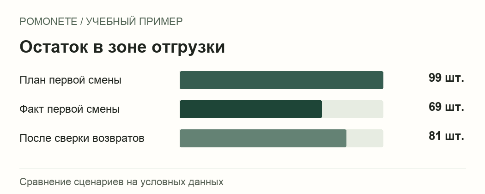

Внутренний перенос товара между зонами склада селлера
Аналитика Яндекс Маркета, когда отгрузочный остаток меняется из-за внутренних перемещений.
На общем складе продавца фильтров хватает единиц, но зона сборки заказов Яндекс Маркета сообщает о дефиците. Аналитика остатков требует учесть, где именно находится товар и завершена ли операция. Соберём движение между зонами и запишем момент, когда оно реально меняет доступность.
Как определить приход
Возьмите момент подтверждённой выкладки в зоне, из которой можно собирать заказ. На другом этапе товар физически существует, но процесс им не пользуется. Проверьте, совпадает ли фактическая единица с внутренним ключом. Для товара в дороге полезен отдельный статус.
Чтобы пересобрать расчёт «Остаток в зоне отгрузки» для своего магазина, перенесите в него исходные числа. В формуле A обозначает «остаток на начало», B обозначает «принято из других зон», C обозначает «списано в обработку». Начальную величину и два направления движения фиксируют разными строками. Операция должна попадать в одно направление с корректным знаком. Запишите рядом период и охват каждого среза. Для оценочных строк оставьте пояснения рядом с исходными значениями. При чтении сводки будет видно, какие из них пока подтверждены.
Остаток в зоне отгрузки = A + B − C
| Условие | Остаток на начало | Принято из других зон | Списано в обработку | Остаток в зоне отгрузки |
|---|---|---|---|---|
| План первой смены | 180 | 65 | 146 | 99 шт. |
| Факт первой смены | 180 | 41 | 152 | 69 шт. |
| После сверки возвратов | 180 | 53 | 152 | 81 шт. |

В сценарии «План первой смены» в формулу подставляем остаток на начало = 180, принято из других зон = 65, списано в обработку = 146. Получается 99 шт.. Перемещение уже должно быть закрыто к началу сборки.
В сценарии «Факт первой смены» в формулу подставляем остаток на начало = 180, принято из других зон = 41, списано в обработку = 152. Получается 69 шт.. Часть прихода остаётся в промежуточной зоне и в доступный остаток не входит.
В сценарии «После сверки возвратов» в формулу подставляем остаток на начало = 180, принято из других зон = 53, списано в обработку = 152. Получается 81 шт.. Из отдельного участка выпущены пригодные товары после завершения проверки.
Если «План первой смены» взять за исходную точку, «Факт первой смены» меняет показатель «остаток в зоне отгрузки» на -30 шт., а «После сверки возвратов» на -18 шт.. Между двумя последними строками разница составляет 12 шт. при вычитании второй из третьей. Смотрите, какой именно вход изменился между строками. Если менялись объём и условия одновременно, итог сравнения относится ко всему сочетанию.
Запишите отдельно результат по обычным условиям «План первой смены» (99 шт.) и результат по уточнённым условиям «После сверки возвратов» (81 шт.). Если обе оценки получились по одному правилу, следующий вопрос касается исходных данных. Проверьте, сохраняется ли направление сравнения, если вернуть одно нестабильное условие к исходному. Сценарии полезно привязывать к операционному событию, по которому можно проверить, что новый режим действительно произошёл.
Почему остаток нельзя просто сложить
Отправление из одной зоны и приход в другую могут происходить в разные минуты. Сумма из двух снимков способна учесть перемещение дважды. Подбирайте общий момент среза или учитывайте отдельное состояние «в перемещении».
Проверьте переход от первичной записи до показателя «остаток в зоне отгрузки». Колонки «остаток на начало, принято из других зон, списано в обработку» могут поступить разными путями. Пройдите пример, где дата и сумма видны в исходнике, до последней строки. Для этого подойдут журнал склада и временные отметки заказов. Затем возьмите один случай с исключением и убедитесь, что результат можно восстановить по сохранённому правилу.
Для сравнения выведите короткий журнал с временем поступления работы, началом обработки и моментом передачи. Длительность операции измеряют на нескольких сменах, чтобы короткая спокойная неделя не стала единственной нормой. Товары разных размеров и сложность сборки записывают отдельными группами. На узком участке проверьте распределение работы по часам и общую загрузку за день. Даже при одинаковом дневном итоге в очереди может остаться разное количество заказов.
Что сильнее всего меняет результат
Продолжим на базе «Факт первой смены» (69 шт.). Разложим расчёт по входам «остаток на начало», «принято из других зон», «списано в обработку». Для удобства каждый опыт меняет одну величину примерно на десятую часть. Во всех остальных полях оставляем исходные числа. Для проверки более длинного периода шаги можно подобрать по фактическим колебаниям из истории.
- «Остаток на начало» меняется с 180 на 198. При прежних остальных входах получается 87 шт., сдвиг составляет 18 шт..
- «Принято из других зон» меняется с 41 на 45. При прежних остальных входах получается 73 шт., сдвиг составляет 4 шт..
- «Списано в обработку» меняется с 152 на 167. При прежних остальных входах получается 54 шт., сдвиг составляет -15 шт..
Отметьте в рабочей таблице, что «остаток на начало» показал сдвиг 18 шт.. Оцените, достаточно ли этой величины, чтобы оправдать смену выбранного режима. Если решение остаётся тем же, ограничьтесь контролем на очередной дате. При перевороте вывода запросите уточнение исходного значения и повторите опыт.
Отдельно обсудите необходимость маркировки перед доступностью. Если в промежуточной зоне находятся исправные, но ещё не проверенные единицы, ускорение переноса без проверки ухудшит задачу. Узкий процесс следует измерять вместе с проверкой соответствия.
Что считать сигналом к корректировке
Если зона отгрузки систематически расходует запас раньше пополнения, уточните график подтверждения прихода. Оцените объём и время, которые реально нужны на перенос. После изменения проверьте фактические операции и количество остановок сборки.
Полезно раз в несколько смен собрать пакет отклонений и приложить отметки о причинах. У одного опоздания бывает несколько объяснений, и назначать его первому видимому участку рискованно. Если временный ресурс перемещали между зонами, включите в расчёт, где исчезли эти часы. После пилота проверьте верхний хвост длительности и число заказов, которые перешли за срок.
При еженедельной сверке поставьте рядом сценарий «После сверки возвратов» и реально наблюдавшееся значение. Если оценка стала систематически расходиться с результатом, назовите источник и предложите измерение меньшего масштаба. Для селлера Яндекс Маркета такой шаг важен, когда тот же показатель собирают разные сотрудники или несколько складов.